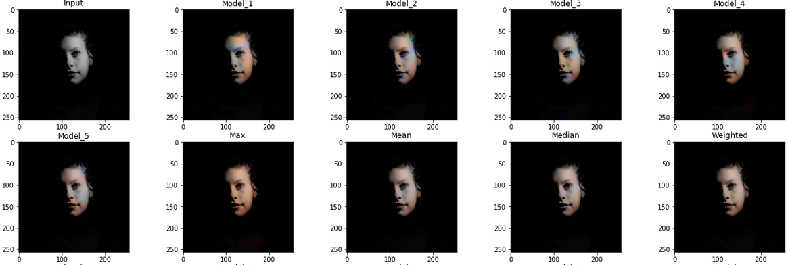
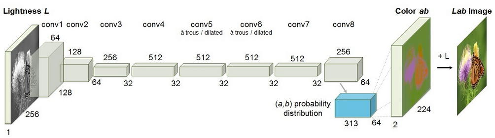
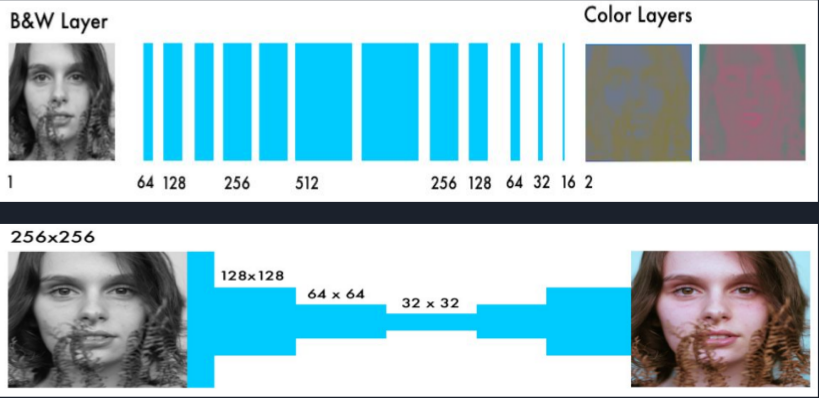

Old Photograph Retrieval, Image Colorization
- Ahmed Mohamed EL-Bawab (08)
- Khalil Ismail Khalil (23)
Problem Statement
Given a gray-scale image as input, we try to get an acceptable colored version of it.
Dataset
We used Colornet dataset, it contains around 10,000 colored images for training and 500 gray-scale images for testing.
Colornet DatasetInput/Output Examples


State of the art
There is not state of art for this type of project as this algorithm is evaluated using a "colorization Turing test" asking human participants to choose between a generated and ground truth color image. This method successfully fools humans on 32% of the trials.
Original Model from Literature

Proposed Updates
Update #1: Used a different model architecture.

Update #2: Trained our model with 10,000 images.
Update #3: Added data augmentation with final train size of 50,000.
Results
We tried different hyper parameters.

Technical report
- Training hardware: Colab
- Training time: ~ 45 hours
- Number of epochs: 1000 epochs
- Time per epoch: [3:12] seconds
Conclusion
- We see that the model needs to be trained with more images.
- The model is biased towards brown colors.
- The model gives better results with dark colors.
- Our max method on predicted values from different models gives good results.
References
- Colorful Image Colorization Website
- Colorful Image Colorization Paper
- Colorful Image Colorization Github
- Real-Time User-Guided Image Colorization with Learned Deep Priors Website
- Real-Time User-Guided Image Colorization with Learned Deep Priors Paper
- Real-Time User-Guided Image Colorization with Learned Deep Priors Github
- Caffe Website
- Caffe Github
- Image Colorization with Neural Networks Paper
- Colornet Dataset
- Colorizing B&W Photos with Neural Networks Website